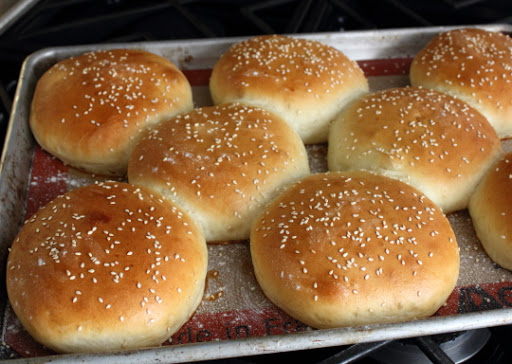
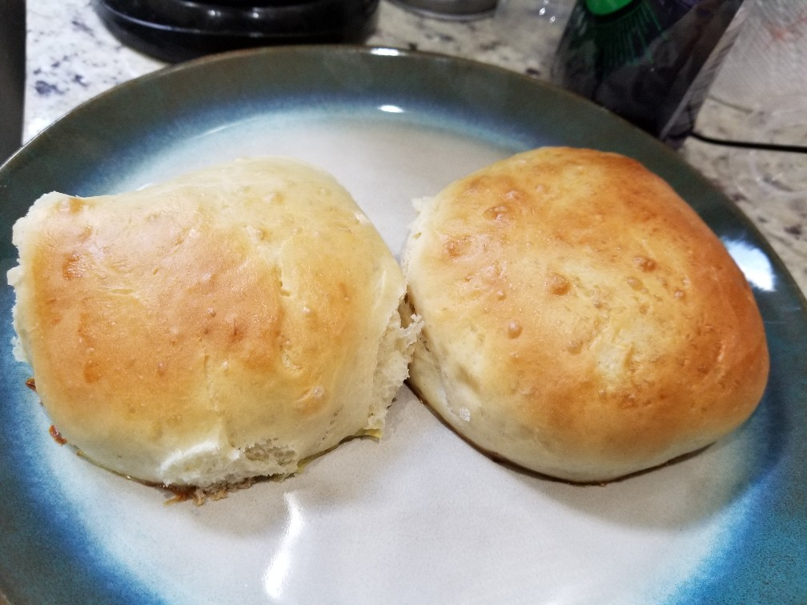

Hamburger Buns
Originally from: Food Wishes

Ingredients
- 2 1/4 tsp yeast
- 1 pound all-purpose flour
- 1 cup water
- 2 eggs
- 3 Tbl butter
- 3 Tbl sugar
- 1 1/4 tsp salt
- 1 Tbl milk
- seasame seeds
Directions
- Make dough from all ingredients except milk, 1 egg, and sesame seeds. Dough should be sticky, but should not stick to fingers when poking. Let rise until doubled in size.
- Punch down and turn out dough onto floured surface and divide into 8 pieces.
- Form each piece into round disc, about 1/2 inch tall. Place onto baking sheet with parchement paper, or silicone mat. Let rise again until doubled in size.
- Make egg wash with additional egg and milk, and spread gently on buns after they have risen. Sprinkle sesame seeds on top.
- Bake in 375° oven 15 - 17 minutes.
Notes
-
2020-06-20 - Made according to recipe sans sesame seeds. Turned out ok, think I cut the second rise a little too short, and over flattened discs. Buns were too thin, but still had decent taste / texture and larger ones held up to good size burgers.
